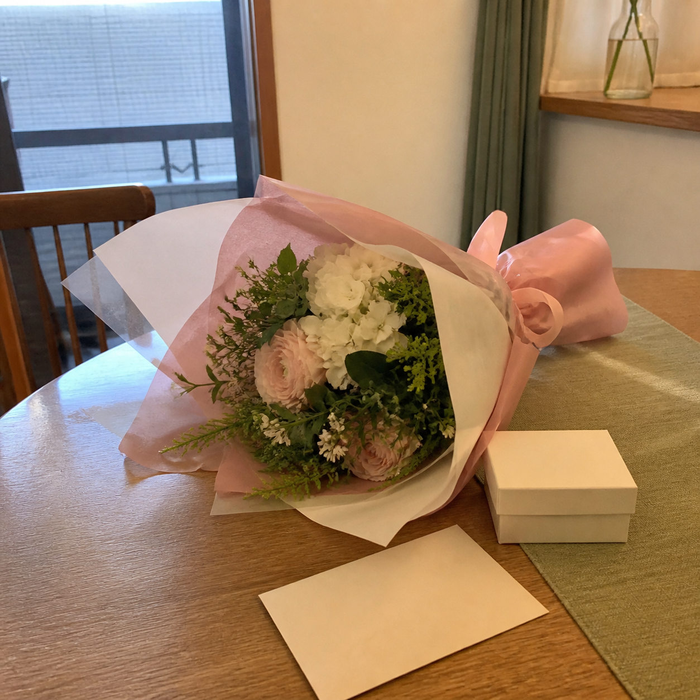
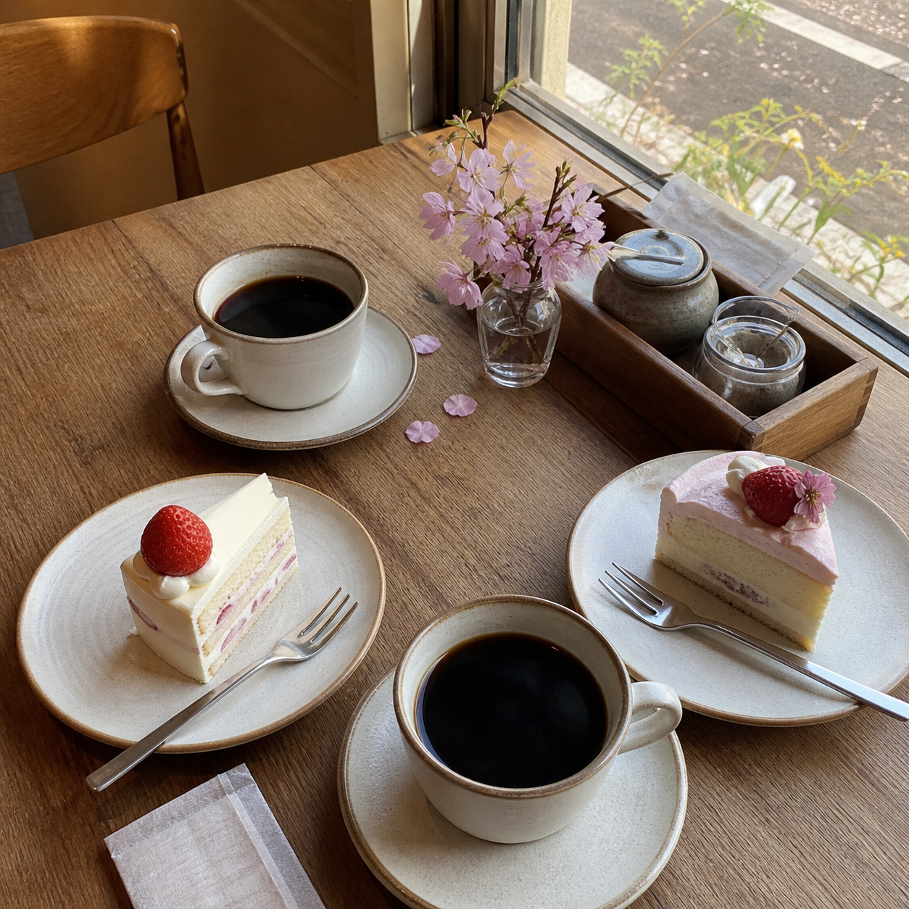
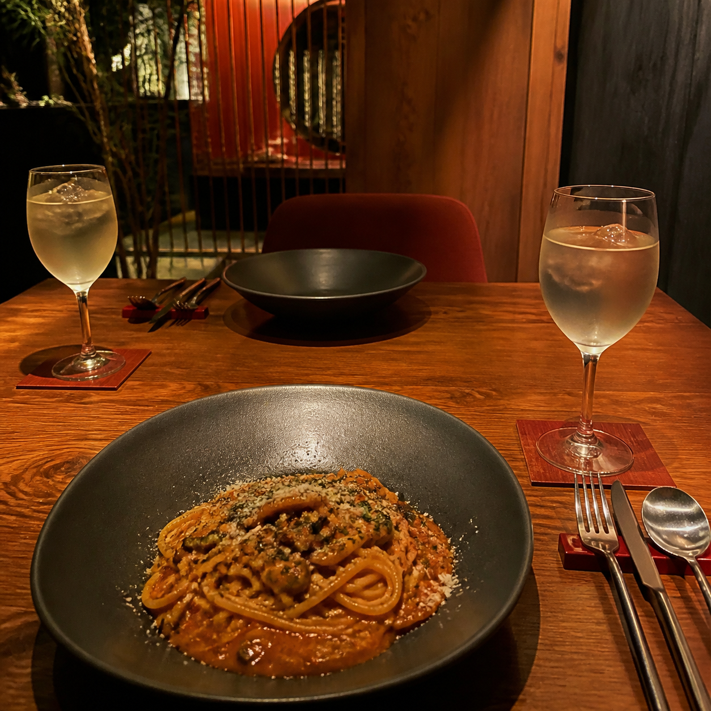
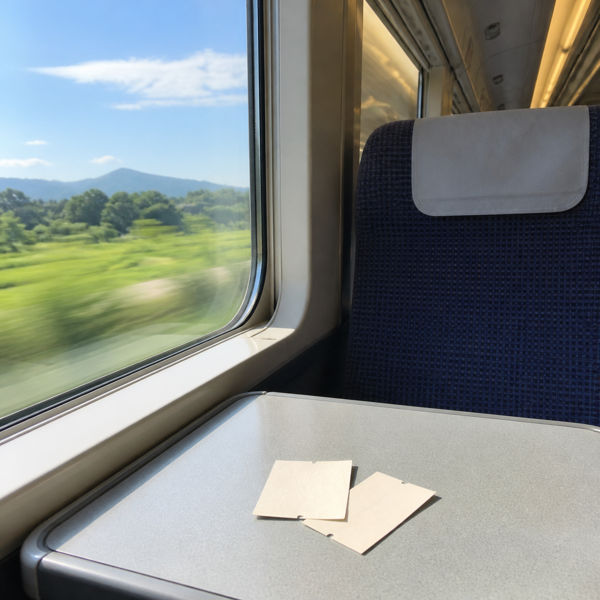

⌖ 固定された投稿
アカウントを作り直しました。 スマホを替えたら前のアカウントに入れなくなってしまったので、これからはこちらを使います。昔の日記や写真はブログに残しています🌷
◇ 4♢ 7♡ 38▱
104件の投稿
@hana_days
日記代わりに、ほぼ毎晩ひとこと。🌷 カフェと小旅行、ときどきMくん。
▣ 2026年4月からPictaを利用
⌖ 固定された投稿
アカウントを作り直しました。 スマホを替えたら前のアカウントに入れなくなってしまったので、これからはこちらを使います。昔の日記や写真はブログに残しています🌷
今日は少し疲れた。早く寝ようかな。
お昼は昨日の残りもの。午後もゆっくり頑張ろう。
新しく買った紅茶、思っていたより香りが強い。でも夜に飲むならこれくらいが好きかも。
雨の音が大きくて眠れない。明日の朝には止んでいますように。
夕方の空がきれいだった。写真を撮る前に色が変わっちゃったので、今日は言葉だけ。
今日はちょっとした記念日。忘れたふりをしていたのに、ちゃんと覚えていてくれました🌷

部屋の片づけを始めたら、昔の写真ばかり見てしまって全然進まなかった。
気になっていたカフェへ。Mくんは撮られるのが苦手なので、今日も私だけです。笑

今月もおつかれさまでした。明日は少しだけ朝寝坊する。
冷たいものばかり飲んでしまう。ちゃんと温かいごはんも食べないと。
今日はブログのほうに長めの日記を書きました。ここに書ききれないことは、たまに #ひとりごと で残しています。
帰りに遠回りしてパン屋さんへ。最後のひとつが買えてうれしい。
月曜日から予定がずれてばかり。こういう日は早めに休もう。
窓の外の雲が夏らしかった。洗濯物もすぐ乾いて助かる。
Mくんと夜ごはん。少し言い合いになったけど、最後はいつも通り。

日帰り小旅行。二枚の切符も、流れていく景色も、ちゃんとブログに残しておこう。
